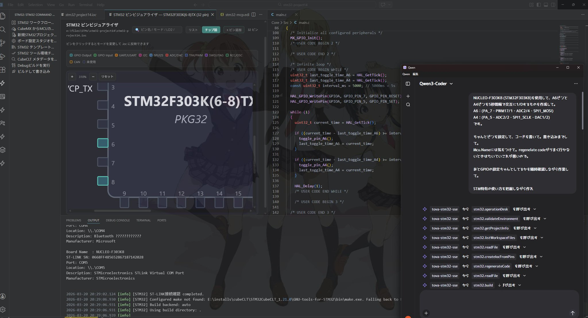

TovaIDE-STM - STM32 Development Environment User Guide
Overview
TovaIDE-STM is an integrated development environment for STM32 microcontroller development on Visual Studio Code. It integrates CubeMX, build system, flash programming, debugging, and hardware configuration tools for efficient embedded development.
If you're unfamiliar with STM32, all I can say is "good luck."
This was created to be easy to use for those familiar with CubeIDE.

Key Features
STM32CubeMX Integration - Code generation from IOC files
Build System - Makefile-based automatic builds
Flash Programming - Program writing via ST-LINK
Debug Features - GDB integrated debugger, register view, Live Expressions
Pin Visualizer - Visual confirmation of IOC configuration
Run environment check: STM32: Run Environment Check
Verify Makefile exists in the project
Verify GCC path is correctly configured
Check error messages in the output panel
If Makefile is missing, launch CubeMX: STM32: Open CubeMX, go to Project > Generate Code, ensure "Makefile" toolchain is selected, and click Generate
Verify arm-none-eabi-gcc is installed and in the configured path
Flash Programming Fails
Verify ST-LINK driver is installed
Verify ST-LINK is properly connected (check Device Manager)
Ensure no other tool is using ST-LINK
Verify board power is on
Check ST-LINK firmware is up to date
Debug Session Won't Start
Verify GDB path is correctly configured
Verify ST-LINK GDB Server path is correct
Verify launch.json is properly generated
Check firewall is not blocking GDB server
Verify arm-none-eabi-gdb is installed
USER CODE Disappears After Code Generation
Ensure code is written only within USER CODE sections
Verify comment format is correct: /* USER CODE BEGIN n */ and /* USER CODE END n */
Develop a habit of backing up files manually
Frequently Asked Questions
Q: What is the difference between CubeMX and CubeCLT?
A: CubeMX is a GUI-based configuration tool (IOC file editing, code generation). CubeCLT is a command-line tool suite (GCC, GDB, ST-LINK). Both are required.
Q: How do I build Release instead of Debug?
A: Currently only Debug builds are supported. For Release builds, edit the Makefile directly.
Q: How do I switch between multiple STM32 boards?
A: Add multiple project folders to your workspace and switch between them as needed.
Q: What if arm-none-eabi-gcc is not found?
A: Ensure it is installed as part of CubeCLT or separately. Configure the correct path in STM32 Environment Settings.
Q: Can I use this offline?
A: Yes. Build, flash programming, and debugging all work offline. No internet connection is required.